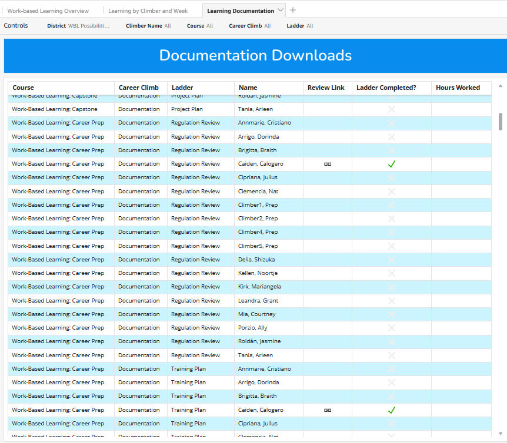

Product Designer @Hats & Ladders
3 weeks
Insights & Reporting

from concept to interactive prototype—built directly in Figma Make instead of waiting on engineering capacity.
shared artifact aligned PM, engineering, and learning design around the same insight model.
AI-generated insight patterns validated with educators before a single line of production code.
faster stakeholder review cycles by replacing static decks with a clickable Figma Make build.
I led the design and prototyping of the Climber Insight Report end-to-end—turning raw AI signals about each Climber's career-readiness journey into a clear, educator-facing artifact. Using Figma Make, I built a working prototype that simulated real data, AI-generated narrative, and interactive drill-downs, so PM, engineering, and learning design could react to a real product instead of a deck. The work defined the report's structure, the AI's voice, and the patterns we'd hand off to engineering.
The report had to translate noisy AI outputs into something educators could act on in under a minute—clear enough to trust, specific enough to guide a conversation with a Climber, and structured enough to scale across hundreds of cohorts.
Prototyping in Figma Make gave engineering a concrete target to react to. Together we mapped which insights the AI could generate reliably, which needed guardrails, and which were better expressed as structured data than as natural language. These conversations shaped both the report's surface and the data contract behind it.
Free-form AI summaries drifted in tone across Climbers. We constrained the model to a structured template with named insight slots so output stayed consistent at scale.
Some signals were noisy or sparse for early-stage Climbers. We defined fallbacks and confidence indicators with engineering so the report degraded gracefully instead of fabricating insight.
The final prototype is an interactive Climber Insight Report that pulls structured AI summaries, progress signals, and recommended next actions into one educator-facing surface. Built entirely in Figma Make, it served as the source of truth for design, engineering handoff, and educator validation—turning an AI roadmap item into something stakeholders could click through and trust.